Each variant was drawn by Nano Banana Pro from the old logo itself. Kept: the rising bars standing in for the M, the rounded stroke ends and the wide, even-weight lettering. Dropped: the gradient, the gloss and the second colour, in favour of flat Signal. Every mark is cut from the raw output and recoloured to exact Signal. Symbols get favicon and avatar tests; lockups are shown on Carbon and Chalk.
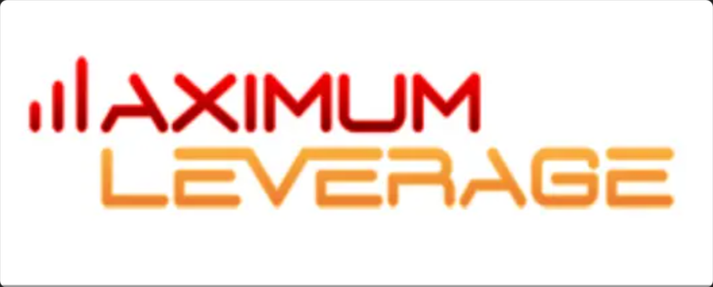
The old logo: three rising bars stand in for the M of MAXIMUM, in rounded, wide capitals with a red to orange gradient.
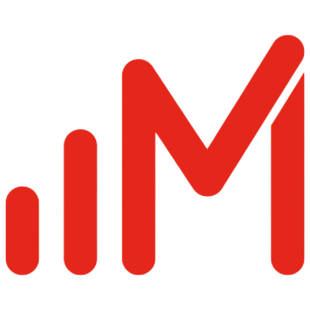
Symbol · The truest homage. Two rising bars, then a clean M, all with the old logo's rounded ends, so it literally reads "ılM" the way the old logo read "ıl + AXIMUM". It holds at 16px.
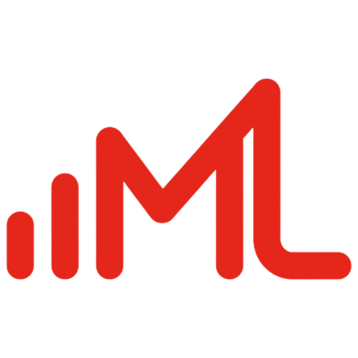
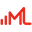
16Symbol · Same idea as O05, with the last stroke turning into an L so the mark carries both initials. It is wider, so it works better as a lockup than as a favicon.
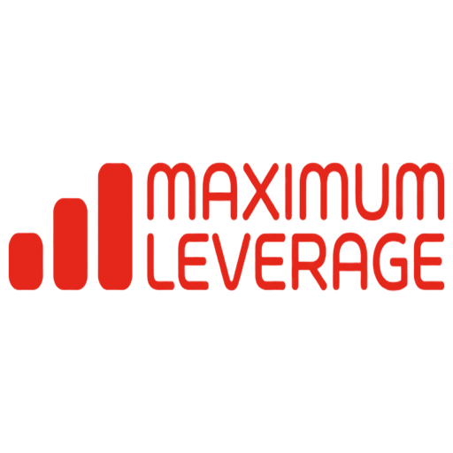
Lockup · The old logo cleaned up: chunky rising bars, rounded techno capitals, one colour. The most recognisable to existing clients. The letterforms are the model's, so the final would need proper type.
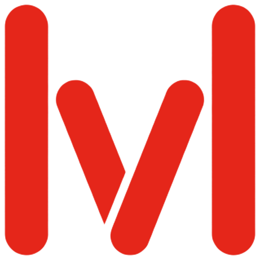
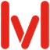
32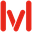
16Symbol · The bars become a single bold M with fully rounded ends. The clearest M and the friendliest, but the rising-bar step is gone, so the homage is only in the rounded stroke.
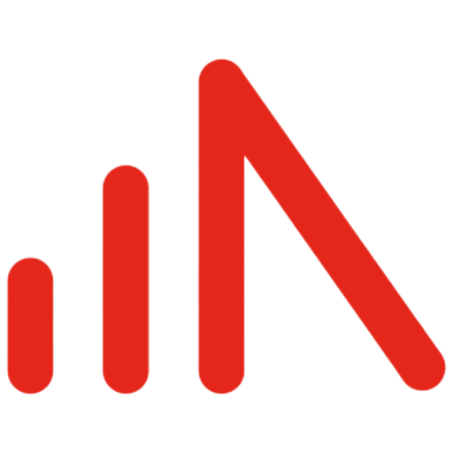
Symbol · The literal start of the old logo, but on its own it reads as a signal icon and an A, "ılΛ", not an M.
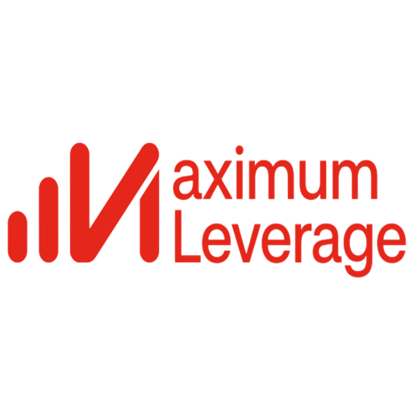
Lockup · The right concept (bars as the M, sentence case like the new brand type), but the model drew the M as an N, so it reads "ılNaximum". Fixable by hand.
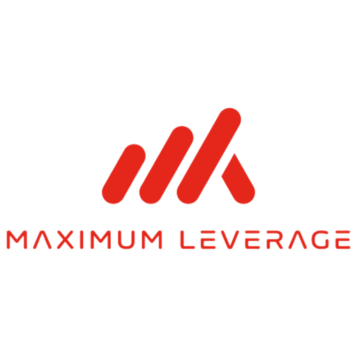
Lockup · The letterspaced capitals are a nice nod to the old type, but the symbol became slanted slashes, the Mane-wave look you dropped.
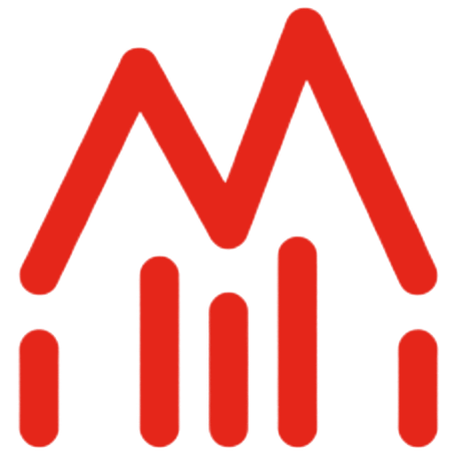
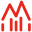
32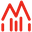
16Symbol · The M outline above the bars reads as a house or an audio meter. Busy at small sizes.
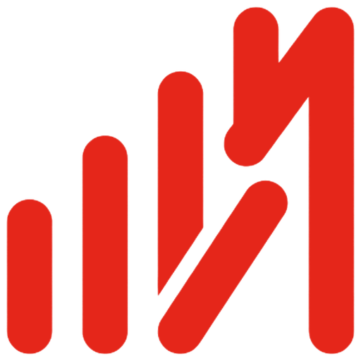
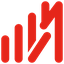
32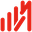
16Symbol · Reads as "ılN". The M is lost.
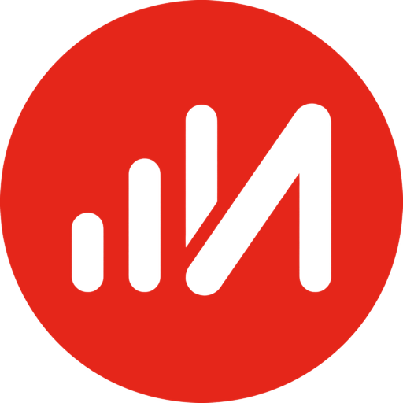
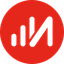
32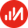
16Symbol · Good avatar shape, but the same "ılN" problem as O03.